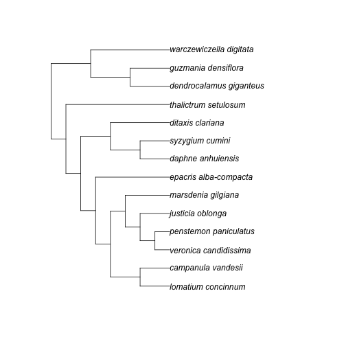

phylocomr gives you access to the Phylocom C library, licensed under BSD 2-clause
Package API
-
ecovolve/ph_ecovolve- interface toecovolveexecutable, and a higher level interface -
phylomatic/ph_phylomatic- interface tophylomaticexecutable, and a higher level interface -
phylocom- interface tophylocomexecutable -
ph_aot- higher level interface toaot -
ph_bladj- higher level interface tobladj -
ph_comdist/ph_comdistnt- higher level interface to comdist -
ph_comstruct- higher level interface to comstruct -
ph_comtrait- higher level interface to comtrait -
ph_pd- higher level interface to Faith’s phylogenetic diversity
A note about files
As a convienence you can pass ages, sample and trait data.frame’s, and phylogenies as strings, to phylocomr functions. However, phylocomr has to write these data.frame’s/strings to disk (your computer’s file system) to be able to run the Phylocom code on them. Internally, phylocomr is writing to a temporary file to run Phylocom code, and then the file is removed.
In addition, you can pass in files instead of data.frame’s/strings. These are not themselves used. Instead, we read and write those files to temporary files. We do this for two reasons. First, Phylocom expects the files its using to be in the same directory, so if we control the file paths that becomes easier. Second, Phylocom is case sensitive, so we simply standardize all taxon names by lower casing all of them. We do this case manipulation on the temporary files so that your original data files are not modified.
Installation
Stable version:
install.packages("phylocomr")Development version:
remotes::install_github("ropensci/phylocomr")ecovolve
ph_ecovolve(speciation = 0.05, extinction = 0.005, time_units = 50)phylomatic
taxa_file <- system.file("examples/taxa", package = "phylocomr")
phylo_file <- system.file("examples/phylo", package = "phylocomr")
(taxa_str <- readLines(taxa_file))#> [1] "campanulaceae/lobelia/lobelia_conferta"
#> [2] "cyperaceae/mapania/mapania_africana"
#> [3] "amaryllidaceae/narcissus/narcissus_cuatrecasasii"
(phylo_str <- readLines(phylo_file))#> [1] "(((((eliea_articulata,homalanthus_populneus)malpighiales,rosa_willmottiae),((macrocentrum_neblinae,qualea_clavata),hibiscus_pohlii)malvids),(((lobelia_conferta,((millotia_depauperata,(layia_chrysanthemoides,layia_pentachaeta)layia),senecio_flanaganii)asteraceae)asterales,schwenkia_americana),tapinanthus_buntingii)),(narcissus_cuatrecasasii,mapania_africana))poales_to_asterales;"
ph_phylomatic(taxa = taxa_str, phylo = phylo_str)#> [1] "(lobelia_conferta:5.000000,(mapania_africana:1.000000,narcissus_cuatrecasasii:1.000000):1.000000)poales_to_asterales:1.000000;\n"
#> attr(,"taxa_file")
#> [1] "/var/folders/fc/n7g_vrvn0sx_st0p8lxb3ts40000gn/T//RtmpFwkBRm/taxa_2c8c72514e28"
#> attr(,"phylo_file")
#> [1] "/var/folders/fc/n7g_vrvn0sx_st0p8lxb3ts40000gn/T//RtmpFwkBRm/phylo_2c8c37e25eba"use various different references trees
library(brranching)
library(ape)
r2 <- ape::read.tree(text=brranching::phylomatic_trees[['R20120829']])
smith2011 <- ape::read.tree(text=brranching::phylomatic_trees[['smith2011']])
zanne2014 <- ape::read.tree(text=brranching::phylomatic_trees[['zanne2014']])
# R20120829 tree
taxa_str <- c(
"asteraceae/bidens/bidens_alba",
"asteraceae/cirsium/cirsium_arvense",
"fabaceae/lupinus/lupinus_albus"
)
ph_phylomatic(taxa = taxa_str, phylo = r2)#> [1] "(((bidens_alba:13.000000,cirsium_arvense:13.000000):19.000000,lupinus_albus:27.000000):12.000000)euphyllophyte:1.000000;\n"
#> attr(,"taxa_file")
#> [1] "/var/folders/fc/n7g_vrvn0sx_st0p8lxb3ts40000gn/T//RtmpFwkBRm/taxa_2c8c3c672523"
#> attr(,"phylo_file")
#> [1] "/var/folders/fc/n7g_vrvn0sx_st0p8lxb3ts40000gn/T//RtmpFwkBRm/phylo_2c8c17b73bd0"
# zanne2014 tree
taxa_str <- c(
"zamiaceae/dioon/dioon_edule",
"zamiaceae/encephalartos/encephalartos_dyerianus",
"piperaceae/piper/piper_arboricola"
)
ph_phylomatic(taxa = taxa_str, phylo = zanne2014)#> [1] "(((dioon_edule:121.744843,encephalartos_dyerianus:121.744850)zamiaceae:230.489838,piper_arboricola:352.234711)spermatophyta:88.058670):0.000000;\n"
#> attr(,"taxa_file")
#> [1] "/var/folders/fc/n7g_vrvn0sx_st0p8lxb3ts40000gn/T//RtmpFwkBRm/taxa_2c8c7eb7e0d9"
#> attr(,"phylo_file")
#> [1] "/var/folders/fc/n7g_vrvn0sx_st0p8lxb3ts40000gn/T//RtmpFwkBRm/phylo_2c8c5a0b078d"
# zanne2014 subtree
zanne2014_subtr <- ape::extract.clade(zanne2014, node='Loganiaceae')
zanne_subtree_file <- tempfile(fileext = ".txt")
ape::write.tree(zanne2014_subtr, file = zanne_subtree_file)
taxa_str <- c(
"loganiaceae/neuburgia/neuburgia_corynocarpum",
"loganiaceae/geniostoma/geniostoma_borbonicum",
"loganiaceae/strychnos/strychnos_darienensis"
)
ph_phylomatic(taxa = taxa_str, phylo = zanne2014_subtr)#> [1] "((neuburgia_corynocarpum:32.807743,(geniostoma_borbonicum:32.036335,strychnos_darienensis:32.036335):0.771406):1.635496)loganiaceae:0.000000;\n"
#> attr(,"taxa_file")
#> [1] "/var/folders/fc/n7g_vrvn0sx_st0p8lxb3ts40000gn/T//RtmpFwkBRm/taxa_2c8c6fce2295"
#> attr(,"phylo_file")
#> [1] "/var/folders/fc/n7g_vrvn0sx_st0p8lxb3ts40000gn/T//RtmpFwkBRm/phylo_2c8c46409d8b"
ph_phylomatic(taxa = taxa_str, phylo = zanne_subtree_file)#> [1] "((neuburgia_corynocarpum:32.807743,(geniostoma_borbonicum:32.036335,strychnos_darienensis:32.036335):0.771406):1.635496)loganiaceae:0.000000;\n"
#> attr(,"taxa_file")
#> [1] "/var/folders/fc/n7g_vrvn0sx_st0p8lxb3ts40000gn/T//RtmpFwkBRm/taxa_2c8c3c2734b5"
#> attr(,"phylo_file")
#> [1] "/var/folders/fc/n7g_vrvn0sx_st0p8lxb3ts40000gn/T//RtmpFwkBRm/phylo_2c8c31f575ed"aot
traits_file <- system.file("examples/traits_aot", package = "phylocomr")
phylo_file <- system.file("examples/phylo_aot", package = "phylocomr")
traitsdf_file <- system.file("examples/traits_aot_df", package = "phylocomr")
traits <- read.table(text = readLines(traitsdf_file), header = TRUE,
stringsAsFactors = FALSE)
phylo_str <- readLines(phylo_file)
ph_aot(traits = traits, phylo = phylo_str)#> $trait_conservatism
#> # A tibble: 124 x 28
#> trait trait.name node name age ntaxa n.nodes tip.mn tmn.ranklow
#> <int> <chr> <int> <chr> <dbl> <int> <int> <dbl> <int>
#> 1 1 traitA 0 a 5 32 2 1.75 1000
#> 2 1 traitA 1 b 4 16 2 1.75 640
#> 3 1 traitA 2 c 3 8 2 1.75 679
#> 4 1 traitA 3 d 2 4 2 1.5 251
#> 5 1 traitA 4 e 1 2 2 1 59
#> 6 1 traitA 7 f 1 2 2 2 1000
#> 7 1 traitA 10 g 2 4 2 2 1000
#> 8 1 traitA 11 h 1 2 2 2 1000
#> 9 1 traitA 14 i 1 2 2 2 1000
#> 10 1 traitA 17 j 3 8 2 1.75 664
#> # … with 114 more rows, and 19 more variables: tmn.rankhi <int>, tip.sd <dbl>,
#> # tsd.ranklow <int>, tsd.rankhi <int>, node.mn <dbl>, nmn.ranklow <int>,
#> # nmn.rankhi <int>, nod.sd <dbl>, nsd.ranklow <int>, nsd.rankhi <int>,
#> # sstipsroot <dbl>, sstips <dbl>, percvaramongnodes <dbl>,
#> # percvaratnode <dbl>, contributionindex <dbl>, sstipvnoderoot <dbl>,
#> # sstipvnode <dbl>, ssamongnodes <dbl>, sswithinnodes <dbl>
#>
#> $independent_contrasts
#> # A tibble: 31 x 17
#> node name age n.nodes contrast1 contrast2 contrast3 contrast4 contrastsd
#> <int> <chr> <dbl> <int> <dbl> <dbl> <dbl> <dbl> <dbl>
#> 1 0 a 5 2 0 0 0 0.254 1.97
#> 2 1 b 4 2 0 1.03 0 0.516 1.94
#> 3 2 c 3 2 0.267 0.535 0 0 1.87
#> 4 3 d 2 2 0.577 0 1.15 0 1.73
#> 5 4 e 1 2 0 0 0.707 0 1.41
#> 6 7 f 1 2 0 0 0.707 0 1.41
#> 7 10 g 2 2 0 0 1.15 0 1.73
#> 8 11 h 1 2 0 0 0.707 0 1.41
#> 9 14 i 1 2 0 0 0.707 0 1.41
#> 10 17 j 3 2 0.267 0.535 0 0 1.87
#> # … with 21 more rows, and 8 more variables: lowval1 <dbl>, hival1 <dbl>,
#> # lowval2 <dbl>, hival2 <dbl>, lowval3 <dbl>, hival3 <dbl>, lowval4 <dbl>,
#> # hival4 <dbl>
#>
#> $phylogenetic_signal
#> # A tibble: 4 x 5
#> trait ntaxa varcontr varcn.ranklow varcn.rankhi
#> <chr> <int> <dbl> <int> <int>
#> 1 traitA 32 0.054 1 1000
#> 2 traitB 32 0.109 1 1000
#> 3 traitC 32 0.622 74 927
#> 4 traitD 32 0.011 1 1000
#>
#> $ind_contrast_corr
#> # A tibble: 3 x 6
#> xtrait ytrait ntaxa picr npos ncont
#> <chr> <chr> <int> <dbl> <dbl> <int>
#> 1 traitA traitB 32 0.248 18.5 31
#> 2 traitA traitC 32 0.485 27.5 31
#> 3 traitA traitD 32 0 16.5 31bladj
ages_file <- system.file("examples/ages", package = "phylocomr")
phylo_file <- system.file("examples/phylo_bladj", package = "phylocomr")
ages_df <- data.frame(
a = c('malpighiales','salicaceae','fabaceae','rosales','oleaceae',
'gentianales','apocynaceae','rubiaceae'),
b = c(81,20,56,76,47,71,18,56)
)
phylo_str <- readLines(phylo_file)
(res <- ph_bladj(ages = ages_df, phylo = phylo_str))#> [1] "((((((lomatium_concinnum:20.250000,campanula_vandesii:20.250000):20.250000,(((veronica_candidissima:10.125000,penstemon_paniculatus:10.125000)plantaginaceae:10.125000,justicia_oblonga:20.250000):10.125000,marsdenia_gilgiana:30.375000):10.125000):10.125000,epacris_alba-compacta:50.625000)ericales_to_asterales:10.125000,((daphne_anhuiensis:20.250000,syzygium_cumini:20.250000)malvids:20.250000,ditaxis_clariana:40.500000):20.250000):10.125000,thalictrum_setulosum:70.875000)eudicots:10.125000,((dendrocalamus_giganteus:27.000000,guzmania_densiflora:27.000000)poales:27.000000,warczewiczella_digitata:54.000000):27.000000)malpighiales:1.000000;\n"
#> attr(,"ages_file")
#> [1] "/var/folders/fc/n7g_vrvn0sx_st0p8lxb3ts40000gn/T//RtmpFwkBRm/ages"
#> attr(,"phylo_file")
#> [1] "/var/folders/fc/n7g_vrvn0sx_st0p8lxb3ts40000gn/T//RtmpFwkBRm/phylo_2c8c76ed1b96"
Meta
- Please report any issues or bugs.
- License: MIT
- Get citation information for
phylocomrin R doingcitation(package = 'phylocomr') - Please note that this package is released with a Contributor Code of Conduct. By contributing to this project, you agree to abide by its terms.